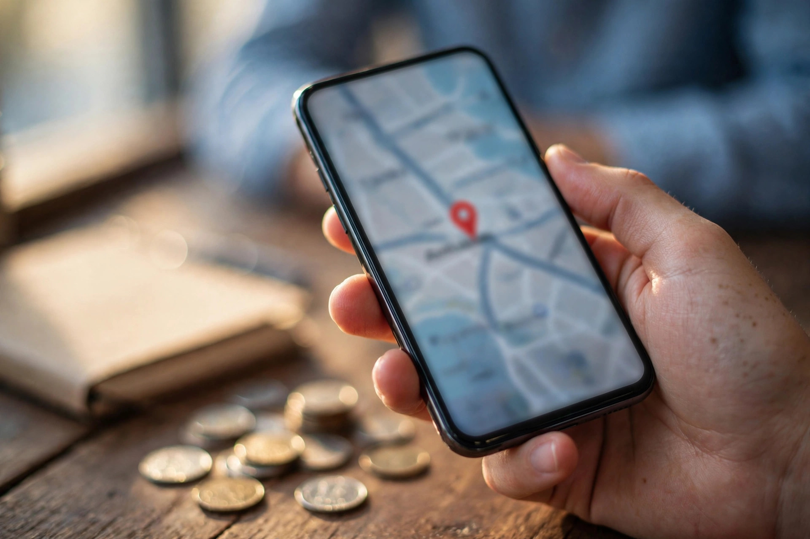

When someone in Karor Lal Eason needs a shop, a clinic, a repair service or a place to buy something today, they rarely walk the whole bazaar first. They open Google Maps on their phone, type what they need, and choose from the few businesses shown near the top. If your business is not on that map, or your listing is incomplete, those customers go to a competitor without ever knowing you exist. This guide explains, in plain words, how Google Maps works for a small town business and what you can do to be found there.
Zaheer Seo Expert is based in Layyah and has no office in Karor Lal Eason. We serve Karor Lal Eason businesses from Layyah, because SEO and Google Maps work is done online and by phone. You do not need to travel for this work, and your customers do not need to know where the work was done.
Why Google Maps Matters More in a Small Town
In a large city, customers compare many options. In Karor Lal Eason, there are usually only a handful of businesses for each need, so appearing in the top map results can make a real difference. A farmer looking for seed or fertiliser, a family searching for a clinic, or a traveller passing through town looking for food will all use the same simple method: search, look at the map, check the photos and ratings, and tap call or directions.
Maps results also appear inside normal Google searches. So a good Maps listing helps you twice: once when people search on Maps itself, and again when they search on Google and see the map box at the top. Our SEO services for Karor Lal Eason businesses explains how this local work fits with the rest of your online presence.

Claim and Complete Your Google Business Profile
Your place on Google Maps comes from your Google Business Profile. If you have never created one, you can add your business for free. If Google already shows your shop, claim it so you control the details. Then complete every field honestly:
- Business name: Use your real shop name only. Do not add extra words or town names that are not part of the name.
- Category: Choose the category that best matches what you actually do, then add suitable extra categories.
- Address and map pin: Place the pin exactly where customers should arrive. A wrong pin in a busy bazaar area wastes everyone's time.
- Phone number: Use a number that is answered during your stated hours, ideally the same number customers use on WhatsApp.
- Hours: Add normal hours and update them for holidays, seasonal changes and special days.
- Photos: Add clear photos of your shopfront, signboard, interior and products so people recognise you from the road.
A complete profile looks trustworthy before a customer reads a single word. An empty profile with no photo and no hours looks closed, even when you are open all day. The Google Business Profile optimization guide walks through each setting in more detail.
Use the Words Your Customers Actually Type
Google tries to match searches with businesses. Help it by describing your business in the same plain words customers use. In your profile description and services list, name the real things you sell or do: the products on your shelves, the repairs you handle, the treatments or services you provide. Avoid vague claims like best quality service in town, because they tell Google and the reader nothing useful.
Think about the searches made from the villages around Karor Lal Eason as well. People may add the town name, or they may simply search near me while their phone already knows their location. A correct pin, correct category and a full services list help you appear in both cases. This is the heart of our local SEO and Google Business Profile service, and it works the same for a bazaar shop as it does for a clinic or a workshop.

Photos, Reviews and Fresh Details Build Trust
Listings with recent photos usually feel alive. Add a new photo when you change your display, receive new stock or improve your premises. You do not need a professional camera. A clean phone photo in daylight, taken straight and without heavy filters, is enough. Make sure the first photo a customer sees shows your actual shopfront and readable signboard.
Reviews matter just as much. Ask happy customers, politely and without pressure, to leave an honest review on Google. Reply to every review, good or bad, in a calm and short way. In a small community, your reply is read by neighbours, not strangers, so a respectful tone protects your name far beyond one listing.
Keep Your Details the Same Everywhere
Your name, address and phone number should match everywhere they appear: Google, Facebook, your website if you have one and any directory listing. Small differences, such as an old phone number left on a Facebook page, confuse both customers and Google. Pick one correct version and use it everywhere. If you change your number or move your shop, update Google on the same day, not next month.
A Simple Monthly Routine That Keeps You Visible
You do not need to work on Maps every day. A short monthly routine is enough for most Karor Lal Eason businesses. Check your hours, add one or two fresh photos, reply to any new reviews, read the questions people have asked on your listing and answer them, and confirm that your phone number and pin are still correct. When something in your business changes, update the listing at that moment rather than waiting for the routine.
If this feels like one job too many, that is work Zaheer Seo Expert handles for clients. Our general guide to SEO for Karor Lal Eason businesses covers the wider picture, and the Karor Lal Eason location page shows the services available to businesses here. Everything is arranged by phone, the business stays based in Layyah, and your listing in Karor Lal Eason becomes clearer, fuller and easier for customers to trust.
Frequently Asked Questions
Do I need to pay Google to appear on Maps?
No. A Google Business Profile is free to create and manage. You only pay if you choose to hire someone, like Zaheer Seo Expert based in Layyah, to set it up and maintain it properly for you.
My shop is inside the bazaar with no clear street address. What should I do?
Use the closest accurate address you can, then place the map pin exactly at your shop entrance and add a clear shopfront photo. Customers use the pin and the photo together to find you.
How long does a new listing take to show on Maps?
Google usually asks you to verify the business first, which can take some days depending on the method offered. After verification, a complete listing can begin appearing in local results, and it strengthens as photos and reviews are added.
Can Zaheer Seo Expert manage my listing if you are in Layyah?
Yes. Zaheer Seo Expert is based in Layyah and has no office in Karor Lal Eason, but Maps and profile work is done online and by phone, so your Karor Lal Eason listing can be managed fully from Layyah.
Want More Customers From Google?
Call 0327 7350830 or email seozaheer14@gmail.com. Zaheer Seo Expert, Layyah - Rajan Shah Road, Rana Nagar, Chak 116 TDA, Pakistan. Open 24 hours.
Get Your SEO Strategy →